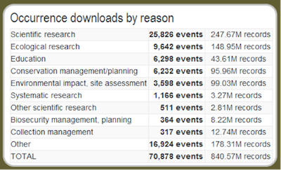

Holiday Greetings from the Atlas of Living Australia
Holiday Greetings from the Atlas of Living Australia
- By Nick dos Remedios
- December 20, 2013
- Tags: Blogs & news Communications
Dear friends and followers of the Atlas of Living Australia
With another busy year drawing to a close, I would like to extend the very best wishes for the holiday season and a happy and prosperous New Year on behalf of myself and all the Atlas staff.
I would also like to take the opportunity to thank all of our colleagues, partners and collaborators who have contributed to another remarkable year for the Atlas, and offer a brief summary of some of our achievements in 2013.
The Atlas passes the 40 Million Record mark
With the addition of some large blocks of records from the Queensland Museum and Museum Victoria and a continuous stream of data from all Atlas partners, the Atlas has passed the 40 million record mark.
http://www.ala.org.au/blogs-news/forty-million-critters-and-counting/
This is another major milestone in developing a large pool of data for the exploration of Australian biodiversity. In addition to the distributional records, the Atlas also now includes over 107,000 images of Australian species.
Volunteer Portal passes 50,000 tasks
The Atlas Volunteer Portal (VP; http://volunteer.ala.org.au/) reached a number of major milestones during 2013. The VP recently saw the completion of the 50,000th transcription task, and it hasn’t stopped there; as of Dec 18 over 59,000 tasks have been transcribed. It also passed the 500 volunteer mark, and the most prolific transcriber, Megan, has completed her 10,000th task. Truly a remarkable effort. Congratulations go to Paul Flemons from the Australian Museum for continuing to drive this remarkable system forward and attract new “expeditions”. To find out more, including how to get involved, head tohttp://www.ala.org.au/blogs-news/volunteers-capture-50000/
ALA Science Symposium
In June of this year, the Atlas held its first Science Symposium. With 30 presentations as well as a panel discussion attended by over 140 delegates, the Symposium highlighted the range of research and operational outcomes that have been enabled by the Atlas. Talks presented at the Science Symposium are available here:
https://speakerdeck.com/atlaslivingaust
There will be another Science Symposium in 2014, so keep your eye out for an announcement in the new year.
Soils to Satellites – collaboration within NCRIS
In a successful joint collaboration, the Atlas and the Terrestrial Ecosystem Research Network (TERN;http://tern.org.au/), funded by the Australian National Data Service (ANDS; http://www.ands.org.au/) have built the new Soils to Satellites tool. This tool enables researchers to explore and visualise a wide range of ecosystem data from plot-based survey work alongside geospatial layers and species data from the Atlas. By bringing data together from the TERN Eco-informatics facility and the Atlas, Soils to Satellites gives researchers the ability to explore and visualise relationships between ecosystem data that weren’t possible until now. The successful delivery of this system also provides an example of how collaboration is adding value to Australian investment in research data infrastructure. Read more athttp://www.ala.org.au/blogs-news/tern-article-soils-to-satellites-now-live/
Biodiversity Profiling
The Atlas collaborated with the Bureau of Meteorology and CSIRO Ecosystem Sciences to produce a report on Biodiversity Profiling1. This study explores key components for developing a national biodiversity monitoring capability. In particular, it looks at whether an approach that couples natural history collections with mapping data can be used to derive metrics of inferred change in biodiversity status across Australia, also referred to as profiles. Find more information athttp://www.ala.org.au/blogs-news/the-time-has-come-a-continent-wide-system-for-monitoring-for-our-biodiversity/, where you can also download a copy of the report. Zerger, A., Williams, K.J., Nicholls, M., Belbin, L. Harwood, T., Bordas, V., Ferrier, S., & Perkins, G. 2013. Biodiversity Profiling: Components of a continental biodiversity information capability. Environmental Information Program Publication Series, No. 2, Bureau of Meteorology, Canberra, Australia. 72 pp.
Spatial variation in Grevillea
One of the presentations at the Science Symposium showed how Atlas tools can be used for more than just looking at occurrence data. A talk by Ben Raymond (scienceuntangled.com) and R.O. (Bob) Makinson (Royal Botanic Gardens & Domain Trust) on spatial variation in Grevillea flower colour detailed his analysis and visualisation of the spatial variation in Grevillea flower colour across Australia. This was done by first extracting species-specific flower colour information from photographs, and then linking this information to the locations of observations of those species. This presents us with an example of how the Atlas can increasingly be used for analysing trait data through geographic range. Learn more about this analysis at
http://www.ala.org.au/blogs-news/spatial-variation-in-grevillea-flower-colour-novel-uses-of-ala-data-and-web-services/
Monitoring, Evaluation, Reporting and Improvement Tool (MERIT)
In a major step forward towards managing our unique Australian biodiversity, the Atlas has joined forces with the Federal Department of Environment to provide infrastructure support for the capture and delivery of information associated with environmental enhancement and monitoring projects. The MERIT Tool went live on Monday 16 December, and can be found at: https://fieldcapture.ala.org.au/
The MERIT tool allows for activity based reporting on over 740 federally funded projects, gathering information on aspects such as feral management and weeding activities, as well as associated vegetation assessments. These data will be openly available in the future and allow for additional studies into the impact of human interventions, as well as natural events, on the health of Australia’s biodiversity.
Just a few other facts and figures
- Use of the Atlas website has grown to an average usage of 2500 visitors daily.
- There are 645 data sets contributing data to the Atlas.
- The Atlas has had 840 million occurrence record downloads. This is a fantastic example of data re-use, with every record in the Atlas now downloaded on average over 20 times! More importantly, these records have been used to support a variety of research and operational outcomes.

From the Atlas Dashboard (http://dashboard.ala.org.au/), Dec 18 2013.
These are just a few of the accomplishments for the Atlas community in 2013. If you want to make sure that you don’t miss out on any communications through the year, just follow this link to manage your “blog email alerts”. http://www.ala.org.au/blogs-news/want-to-recieve-the-newly-improved-ala-email-alert-blogs-in-your-inbox/
We look forward to continuing our collaboration with you through what I’m sure will be another productive year for the Atlas in 2014.
John La Salle
Director Atlas of Living Australia